计算机网络：自顶向下方法 题解
Table of Contents
1. 网络层：控制平面
1.1. 笔记
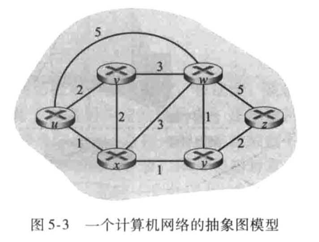
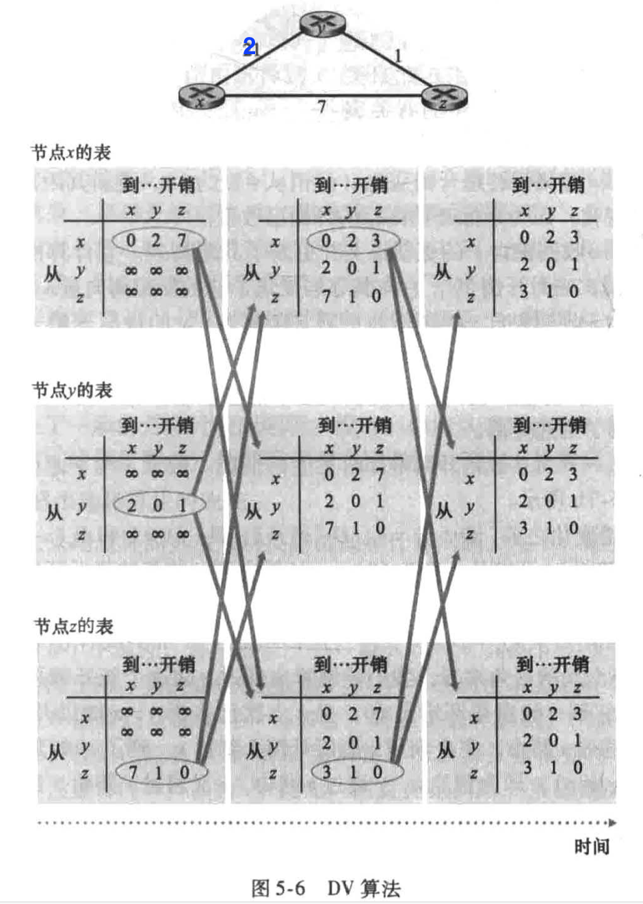
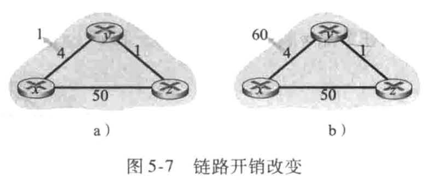
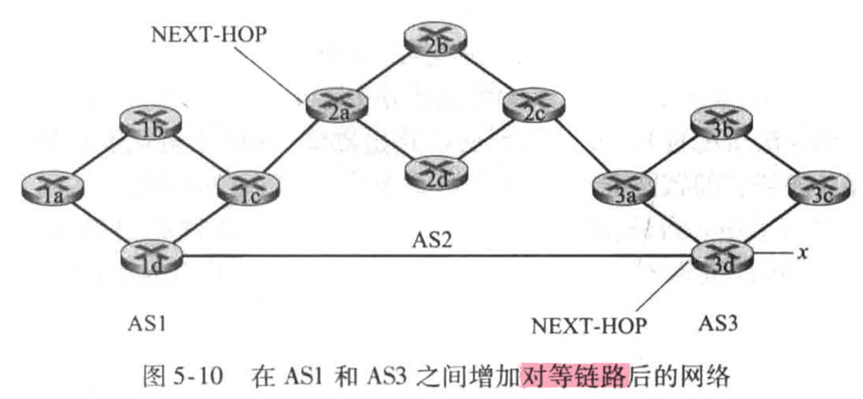
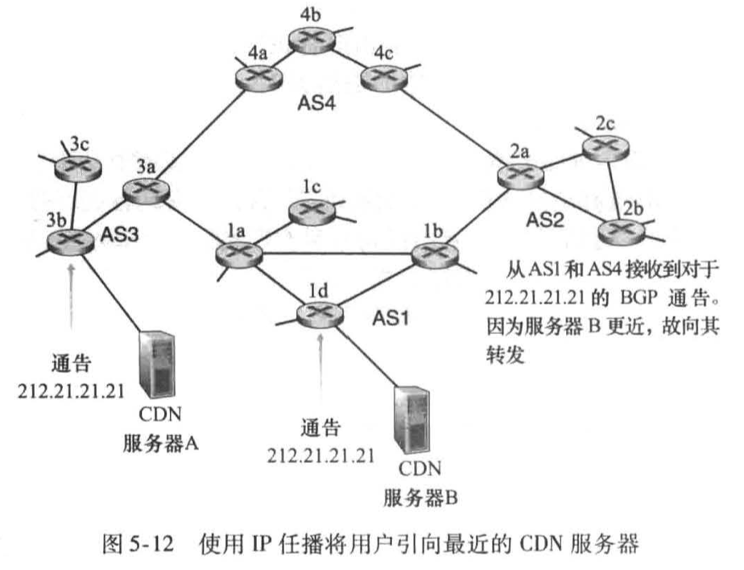
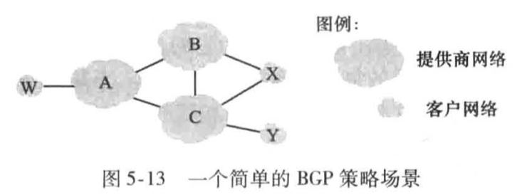
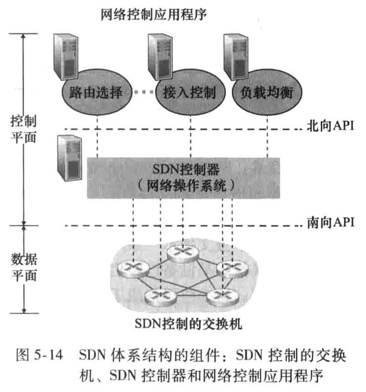
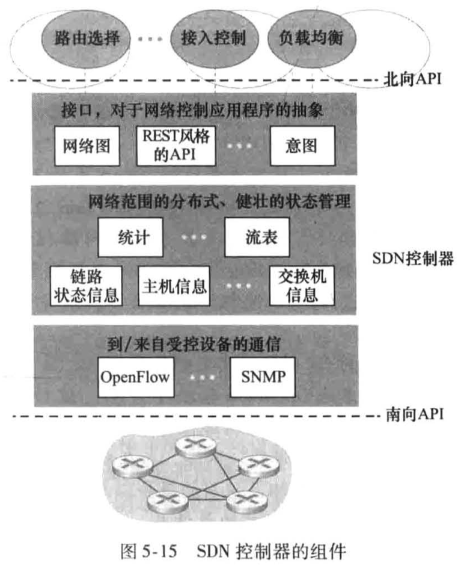
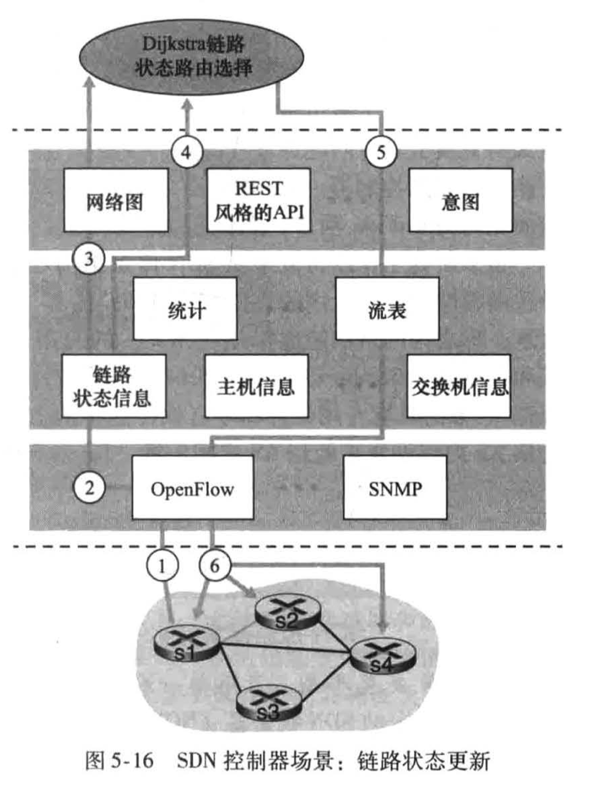
1.2. 复习题
R1 每路由器控制
基于每路由器控制的控制平面意味着什么？
意味着在每台路由器中运行一种路由选择算法，每台路由器中都包含转发和路由选择功能。每台路由器有一个路由选择组件，用于与其他路由器中的路由选择组件通信，以计算其转发表的值。
在这种情况下，当我们说网络控制平面和数据平面是“整体地”实现时，是什么意思？
控制平面路由选择功能与数据平面转发功能位于同一台物理路由器中。
R2 逻辑集中式控制
基于逻辑上集中控制的控制平面意味着什么？
逻辑集中式控制器计算并分发转发表以供每台路由 器使用。
在这种情况下，数据平面和控制平面是在相同的设备或在分离的设备中实现的吗？请解释。
数据平面和控制平面在不同的设备中实现。控制平面在一台或多台服务器中实现，而数据平面在每台路由器中实现。
R3 集中式和分散式路由选择算法
比较和对照集中式和分布式路由选择算法的性质。给出一个路由选择协议的例子，该路由选择协议采用分布式方法和集中式方法。
| 集中式 | 分散式 | |
|---|---|---|
| 计算节点拥有的信息 | 完整的,全局的网络知识 | 与其直接相连链路的开销知识 |
| 计算过程 | 直接计算出从源到目的地之间的最低开销路径 | 通过迭代计算过程以及与相邻节点的信息交换，一个节点逐渐计算出到达某目的节点或一组目的节点的最低开销路径 |
| 例子 | OSPF | BGP |
R4 链路状态和距离矢量路由选择选法
比较和对照链路状态和距离矢量这两种路由选择算法。
| 链路状态 | 矢量 | |
|---|---|---|
| 通信对象 | 所有其他节点 | 直接相连的邻居 |
| 通信内容 | 与自己直接相连链路的开销 | 从自己到网络中所有其他节点的最低开销估计 |
R5 距离矢量路由选择中的无穷计数
在距离矢量路由选择中的“无穷计数”是什么意思？
t0, Dy(x) = 6
t1, y通知z, Dz(x) = c(z,y) + Dy(x) = 7
t2, z通知y, Dy(x) = 8
t3, y通知z, Dz(x) = 9
…
t43, y通知z, Dz(x) = 49
t44, z通知y, Dy(x) = 50
t45, y通知z, Dz(x) = min{c(z,x)+Dx(x), c(z,y)+Dy(x)} = min{50+0, 1+50} = 50
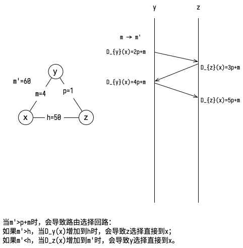
R6
每个自治系统使用相同的AS内部路由选择算法是必要的吗？说明其原因。
不需要，每个AS对其内部的路由享有自治权。
R7 AS内部协议的必要性
为什么在因特网中用到了不同的AS间与AS内部协议？
所有路由器执行相同的路由选择算法以计算穿越整个网络的路由选择路径会遇到两个问题：
- 随着路由器数目变得很大，涉及路由选择信息的通信、计算和存储的开销将高得不可实现。
- 一个组织应当能够按自己的愿望运行和管理其网络，还要能将其网络与其他外部网络连接起来。
R8
是非判断题：当一台OSPF路由器发送它的链路状态信息时，它仅向那些直接相邻的节点发送。解释理由。
错误，它向自制系统内所有其他路由器广播链路状态信息。
R9 OSPF AS中的区域
在OSPF自治系统中区域表示什么？
每个区域都运行自己的OSPF链路状态路由选择算法，在每个区域内，一台或多台区域边界路由器负责为流向该区域以外的分组提供路由选择。
为什么引入区域的概念？
区域的概念是出于可扩展性的考虑而引入的，也就是说，我们希望为一个大规模的OSPF AS建立一个具有层次结构的路由，而区域是构成层次结构路由的一个重要构件。
R10 子网、前缀和BGP路由
定义和对比下列术语：子网、前缀和BGP路由。
将每个接口从其主机或路由器分离出来，形成孤立的网络岛，接口是孤立网络的终点。这些孤立的网络中的每一个都被称为子网。
形式为a.b.c.d/x的地址的x最高比特构成了IP地址的网络部分，并且经常被称为该地址的前缀。
当路由器通过BGP连接通告前缀时，它在前缀中包括一些BGP属性。用BGP术语来说，前缀及其属性称为路由。
R11 AS-PATH NEXT-HOP
BGP是怎样使用NEXT-HOP展性的？它是怎样使用AS-PATH属性的？
BGP路由器使用AS-PATH属性
- 检测和防止通告环路；
- 在通往同一前缀的多个路径中进行选择。
NEXT-HOP属性表示沿着通告路径（在收到通告的AS之外）到一个给定前缀的第一个路由器的IP地址。当配置其转发表时，路由器使用NEXT-HOP属性。
R12 BGP策略
描述一个较高层ISP的网络管理员在配置BGP时是如何实现策略的。
一个一级ISP B可能不会在另外两个一级ISP（例如A和C）之间传输流量。为了执行这一政策，ISP B不会向A通告经过C的路线；也不会向C通过经过A的路线。
R13
是非判断题：当BGP路由器从它的邻居接收到一条通告的路径时，它必须对接收路径增加上它自己的标识，然后向其所有邻居发送该新路径。解释理由。
错误。AS将其ASN加入AS-PATH中的现有列表并发送给邻居意味着该AS向外宣告有一条经过自己的路径。是否这么做取决于AS想实现怎样的BGP策略。
R14
描述在SDN控制器中的通信层、网络范围状态管理层和网络控制应用程序层的主要任务。
- 传送控制器与交换机、主机或其他设备之间的信息。
- 维护网络范围状态信息。
- 使用由SDN控制器提供的API来定义和控制网络设备中的数据平面。
R15
假定你要在SDN控制平面中实现一个新型路由选择协议。你将在哪个层次中实现该协议？解释理由。
SDN网络控制应用程序层，因为这一层里的路由选择网络控制应用程序可以决定源和目的地之间的端到端路径。
R16
什么类型的报文流跨越SDN控制器的北向和南向API？谁是从控制器跨越南向接口发送的这些报文的接收者？谁是跨越北向接口从控制器发送的这些报文的接收者？
What types of messages flow across an SDN controller’s northbound and southbound APIs?
网络控制应用程序与控制器交互的报文通过北向API；受控交换机与控制器交互的报文通过南向API。
Who is the recipient of these messages sent from the controller across the southbound interface, and who sends messages to the controller across the northbound interface?
受控交换机；网络控制应用程序。
R17
描述两种从受控设备到控制器发送的OpenFlow报文类型的目的。描述两种从控制器到受控设备发送的OpenFlow报文类型的目的。
p.268
R18
在OpenDaylight SDN控制器中服务抽象层的目的是什么？
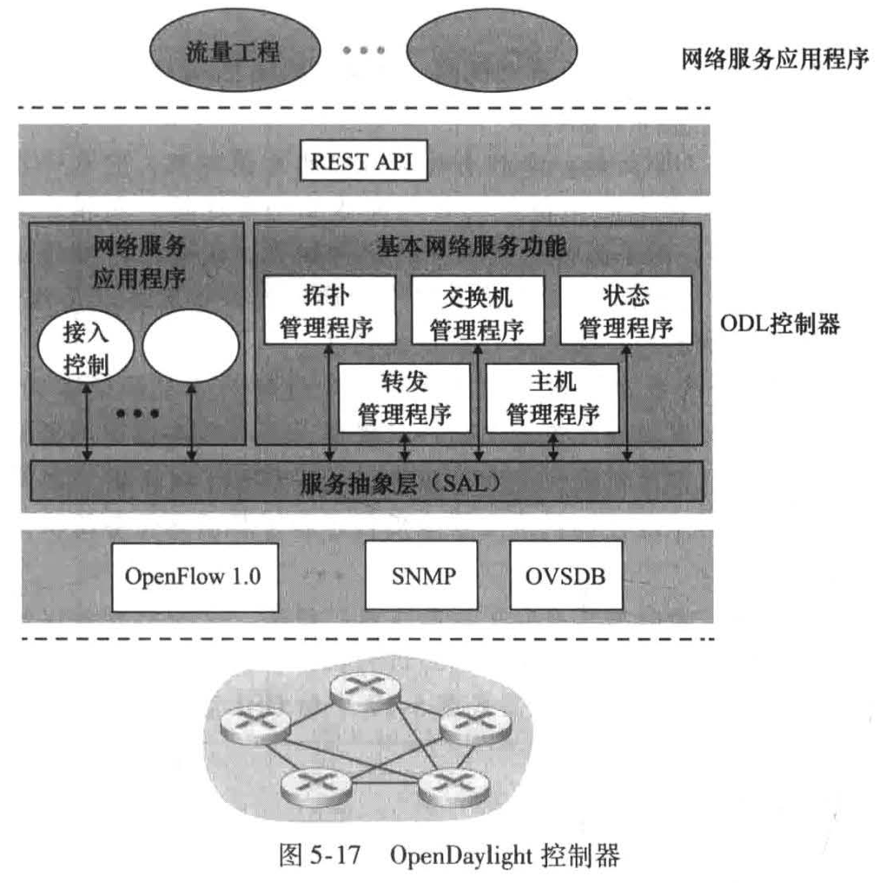
服务抽象层允许内部网络服务应用程序相互通信。它允许控制器组件和应用程序互相调用对方的服务，并订阅它们产生的事件。该层还为通信层的具体底层通信协议提供统一的抽象接口，包括OpenFlow和SNMP。
R19
列举4种不同类型的ICMP报文。
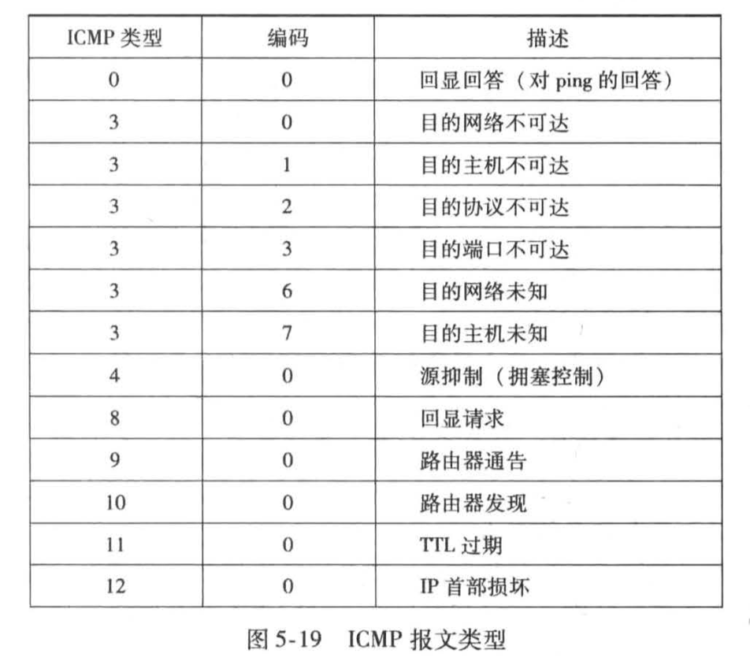
R20
在发送主机执行Traceroute程序，收到哪两种类型的ICMP报文？
目的地之前的路由器发送的TTL过期（11,0）和目的主机发送的目的端口不可达（3,3）。
R21
在SNMP环境中定义下列术语：管理服务器、被管设备、网络管理代理和MIB。
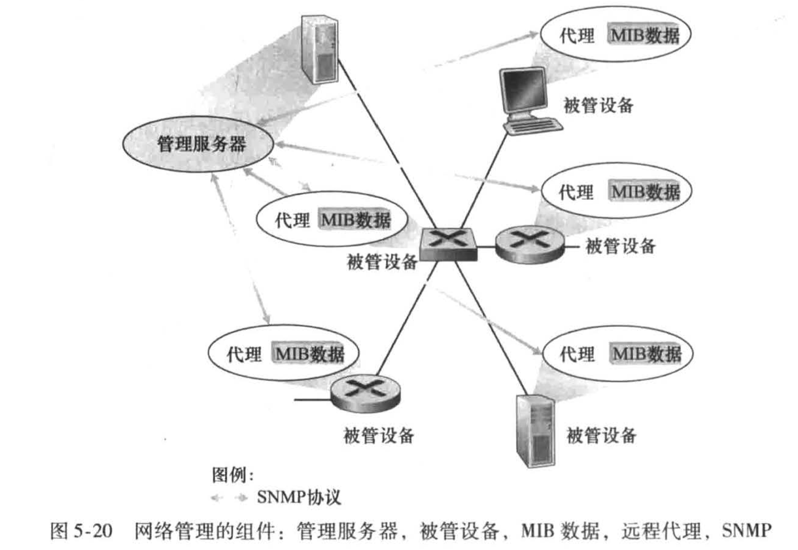
管理服务器是一个应用程序，它运行在网络运营中心的集中式网络管理工作站上。管理服务器是执行网络管理活动的地方，它控制网络管理信息的收集、处理、分析和显示。
被管设备是网络装备的一部分（包括它的软件），位于被管理的网络中。
网络管理代理是运行在被管设备中的一个进程，该进程与管理服务器通信，在管理服务器的命令和控制下在被管设备中采取本地动作。
管理信息库 (Management Information Base, MIB) 收集被管设备中的每个被管对象的关联信
R22 SNMP报文
SNMP GetRequest和SetRequest报文的目的是什么？
请求或设置位于被管设备中的一个或多个MIB对象的值。
R23
SNMP陷阱报文的目的是什么？
通知管理服务器，一个异常情况已经导致了MIB对象值的改变。
1.3. 习题
P1 图中的路径
观察图5-3，列举从y到u不包含任何环路的路径。
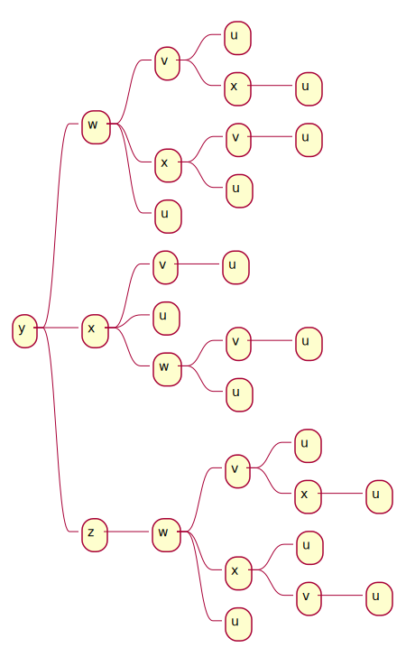
P2
重复习题P1，列举从x到z、z到u以及z到w的不包含任何环路的路径。
x到z:
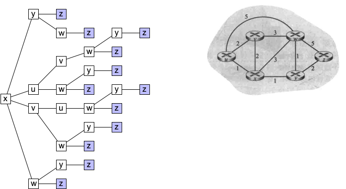
P3 Dijkstra最短路算法
考虑下面的网络。对于标明的链路开销，用Dijkstra的最短路算法计算出从x到所有网络节点的最短路径。通过计算一个类似于表5-1的表，说明该算法是如何工作的。
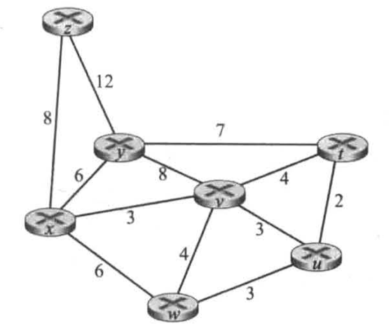
| N' | D(y),p(y) | D(z),p(z) | D(u),p(u) | D(v),p(v) | D(w),p(w) | D(t),p(t) |
|---|---|---|---|---|---|---|
| x | 6,x | 8,x | ∞ | 3,x | 6,x | ∞ |
| x,v | 6,x | 8,x | 6,v | 6,x | 7,v | |
| x,v,w | 6,x | 8,x | 6,v | 7,v | ||
| x,v,w,u | 6,x | 8,x | 7,v | |||
| x,v,w,u,y | 8,x | 7,v | ||||
| x,v,w,u,y,t | 8,x | |||||
| x,v,w,u,y,t,z |
P4
考虑习题P3中所示的网络。使用Dijkstra算法和一个类似于表5-1的表来说明你做的工作：
- 计算出从t到所有网络节点的最短路径。
- 计算出从u到所有网络节点的最短路径。
- 计算出从v到所有网络节点的最短路径。
- 计算出从w到所有网络节点的最短路径。
- 计算出从y到所有网络节点的最短路径。
- 计算出从z到所有网络节点的最短路径。
N' D(x),p(x) D(y),p(y) D(z),p(z) D(u),p(u) D(v),p(v) D(w),p(w) t ∞ 7,t ∞ 2,t 4,t ∞ t,u ∞ 7,t ∞ 4,t 5,u t,u,v 7,v 7,t ∞ 5,u t,u,v,w 7,v 7,t ∞ t,u,v,w,y 7,v 19,y t,u,v,w,y,v 19,y t,u,v,w,y,v,z
P5 距离向量算法
考虑下图所示的网络，假设每个节点初始时知道到它的每个邻居的开销。考虑距离向量算法，并显示在节点z中的距离表表项。
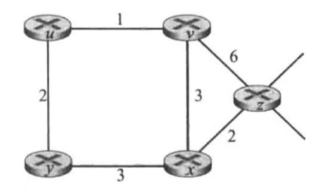
单元中如果有两项，前一项表示节点收到的距离向量，后一项是计算后更新的距离。
迭代1：计算初始距离向量，然后交换接收
| x | y | z | u | v | |
| x | 0 | 3 | 2 | 4 | 3 |
| y | 3 | 0 | 5 | 2 | 3 |
| z | 2 | 5 | 0 | 7 | 5 |
| u | 4 | 2 | 7 | 0 | 1 |
| v | 3 | 3 | 5 | 1 | 0 |
迭代2：
| x | y | z | u | v | |
| x | 0 | 3 | 2 | ∞,4 | 3 |
| y | 3 | 0 | ∞,5 | 2 | ∞,3 |
| z | 2 | ∞,5 | 0 | ∞,7 | 6,5 |
| u | ∞,4 | 2 | ∞,7 | 0 | 1 |
| v | 3 | ∞,3 | 6,5 | 1 | 0 |
迭代3：
| x | y | z | u | v | |
| x | 0 | 3 | 2 | 4 | 3 |
| y | 3 | 0 | 5 | 2 | 3 |
| z | 2 | 5 | 0 | 7,6 | 5 |
| u | 4 | 2 | 7,6 | 0 | 1 |
| v | 3 | 3 | 5 | 1 | 0 |
P6 距离向量算法收敛所需的迭代次数
考虑一个一般性拓扑（即不是以上所显示的特定网络）和一个同步版本的距离向量算法。假设每次迭代时，一个节点与其邻居交换其距离向量并接收它们的距离向量。假定算法开始时，每个节点只知道到其直接邻居的开销，在该分布式算法收敛前所需的最大迭代次数是多少？评估你的答案。
在每一次迭代中，一个节点与它的邻居交换距离表。因此，如果你是节点A，而你的邻居是B，B的所有邻居在一次迭代后将知道到你的一跳或两跳的最低开销路径。
设d为网络的直径——网络中任何两个节点之间无循环的最长路径的长度。利用上述推理，经过d-1次迭代，所有节点都将知道到所有其他节点的最短路径开销为d或更少的跳数。由于任何大于d跳的路径都会有环路，该算法将在最多d-1次迭代后收敛。
P7
考虑下图所示的网络段。x只有两个相连邻居w与y。w有一条通向目的地u（没有显示）的最低开销路径，其值为5，y有一条通向目的地u的最低开销路径，其值为6。从w与y到u（以及w与y之间）的完整路径未显示出来。网络中所有链路开销皆为正整数值。
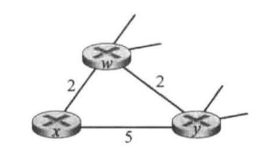
- 给出x对目的地w、y和u的距离向量。
- 给出对于c(x,w)或c(x,y)的链路开销的变化，使得执行了距离向量算法后，x将通知其邻居有一条通向u的新最低开销路径。
- 给出对c(x,w)或c(x,y)的链路开销的变化，使得执行了距离向拭算法后，x将不通知其邻居有一条通向x的新最低开销路径。
x w y u x 0 2 5 ∞ w 2 0 2 5 y 5 2 0 6 u ∞ 5 6 0 x w y u x 0 2 5 ∞,7 w 2 0 2 5 y 5 2 0 6 u ∞,7 5 6 0 Dx(U) = min{Dy(U)+c(x,y), Dw(U)+c(x,w)}
c(x,w)或c(x,y)的链路开销变化以后如果影响上式就会使得x计算出新的到u的最低开销路径。
- 同上。
P8
考虑如图5-6中所示3个节点的拓扑。不使用显示在图5-6中的开销值，链路开销值现在是c(x,y)=3，c(y,z)=6，c(z,x)=4。在距离向量表初始化后和在同步版本的距离向量算法每次迭代后，计算它的距离向量表（如我们以前对图5-6讨论时所做的那样）。
y
/ \
3 / \ 6
/ 4 \
x-------z
| x | y | z | |
| x | 0 | 3 | 4 |
| y | 3 | 0 | 6 |
| z | 4 | 6 | 0 |
P9 无穷计数与链路开销减小
考虑距离向量路由选择中的无穷计数问题。如果我们减小一条链路的开销，将会出现无穷计数问题吗？
不会。
为什么？
因为链路开销减小不会造成环路。
如果我们将没有链路的两个节点连接起来，会出现什么情况？
将没有链路的两个节点连接起来，相当于将链路开销从无限大减少到有限大。
P10 距离向量算法的收敛性
讨论图5-6中的距离向量算法，距离向量D(x)中的每个值不是递增的并且最终将在有限步中稳定下来。
在每一次迭代中，节点基于Bellman-Ford方程更新（减少）距离向量中的一些值，在这一过程中没有数值的增加。如果没有更新，那么就不会有消息被发送出去。因此，D(x)是非递增的。由于这些路径的开销是有限的，那么最终距离向量将在有限的步骤中得到稳定。
P11 距离向量算法的计算过程
考虑图5-7。假定有另一台路由器w，与路由器y和z连接。所有链路的开销给定如下：c(x,y)=4, c(x,z)=50, c(y,w)=1, c(z,w)=1, c(y,z)=3。假设在距离向量路由选择算法中使用了毒性逆转。
y
/|\
4/ | \1
/ | \
x |3 w
\ | /
50\ | / 1
\|/
z
- 当距离向量路由选择稳定时，路由器w、y和z向x通知它们之间的距离。它们告诉彼此什么样的距离值？
- 现在假设x和y之间的链路开销增加到60。如果使用了毒性逆转，将会存在无穷计数问题吗？为什么？如果存在无穷计数问题，距离向量路由选择需要多少次迭代才能再次到达稳定状态？评估你的答案。
- 如果c(y,x)从4变化到60，怎样修改c(y,z)使得不存在无穷计数问题。
-
y /|\ 60/ | \1 / | \ x |3 w \ | / 50\ | / 1 \|/ z- 去掉y与z之间的链路。
P12
描述在BGP中是如何检测路径中的环路的。
BGP路由器使用AS-PATH属性来检测和防止通告环路。如果一台路由器在路径列表中看到包含了它自己的AS，它将拒绝该通告。
P13
BGP路由器将总是选择具有最短AS路径长度的无环路由吗？评估你的答案。
不一定，在BGP的路由选择算法中本地偏好规则的优先级高于最短AS-PATH。
P14 eBGP和iBGP
考虑下图所示的网络。假定AS3和AS2正在运行OSPF作为其AS内部路由选择协议。假定AS1和AS4正在运行RIP作为其AS内部路由选择协议。假定AS间路由选择协议使用的是eBGP和iBGP。假定最初在AS2和AS4之间不存在物理链路。
- 路由器3c从下列哪个路由选择协议学习到了前缀x: OSPF、RIP、eBGP或iBGP？
- 路由器3a从哪个路由选择协议学习到了前缀x？
- 路由器1c从哪个路由选择协议学习到了前缀x？
- 路由器1d从哪个路由选择协议学习到了前缀x？
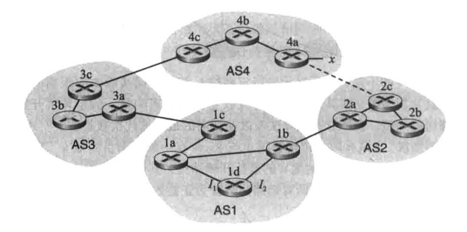
- eBGP
- iBGP
- eBGP
- iBGP
P15
参考前面习题P14，一旦路由器1d知道了x的情况，它将一个表项(x, I)放入它的转发表中。
- 对这个表项而言，I将等于I1还是I2？用一句话解释其原因。
- 现在假定在AS2和AS4之间有一条物理链路，显示为图中的虚线。假定路由器1d知道经AS2以及经AS3能够访问到x。I将设登为I1还是I2？用一句话解释其原因。
- 现在假定有另一个AS，它称为AS5，其位于路径AS2和AS4之间（没有显示在图中）。假定路由器1d知道经AS2 AS5 AS4以及经过AS3 AS4能够访问到x。I将设置为I1还是I2？用一句话解释其原因。
- I1，因为这是到网关1c的最低开销路径。
- I2，根据热土豆算法选择网关1b。
- I1，根据最短AS-PATH。
P16
考虑下面的网络。ISP B为地区ISP A提供国家级主干服务。ISP C为地区ISP D提供国家级主干服务。每个ISP由一个AS组成。B和C使用BGP，在两个地方互相对等。考虑从A到D的流量。B愿意将流量交给C传给西海岸（使得C将承载跨越整个国家的流量开销），而C愿意经其东海
岸与B对等的站点得到这些流量（使得B将承载跨越整个国家的流量）。C可能会使用什么样的BGP机制，使得B将通过东海岸对等点传递A到D的流量？要回答这个问题，你需要钻研BGP规范。
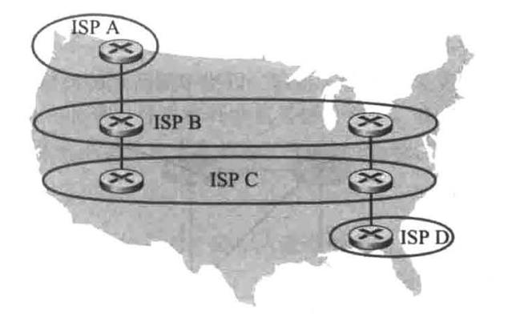
C只通告通过东海岸的对等点到D的路径。
P17
在图5-13中，考虑到达桩网络W、X和Y的路径信息。基于W与X处的可用信息，它们分别看到的网络拓扑是什么？评估你的答案。Y所见的拓扑视图如下图所示。
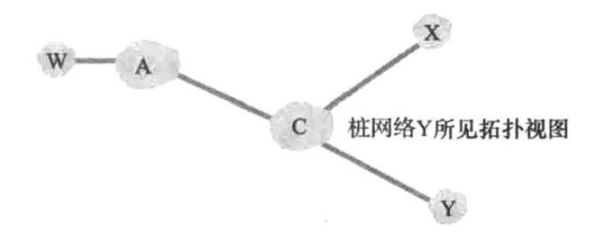
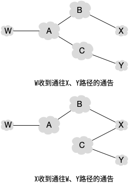